lorenz_partial_additive_splitmode_p30_obsnoise001_nd75_init15_autodim__lc_sweepProject: Lorenz_INDpartial_NDInitSweep_autodim_D1_NormTrue__JacobianODE
Launched: 2026-04-22T00:20:09Z
Completed: 2026-04-22T03:55:40Z
Outcome: complete_clean
Git: latent-JacobianODE @ 28c8380
Expected runs: 5
lorenz_partial_additive_splitmode_p30_obsnoise001_nd75_init15_autodim__lc_sweepDescription
Lorenz partial additive coupling, obs_noise=0.01, n_delays=75, prediction_steps=30, traj_init_steps=15. Training uses split reconstruction mode: uniform for encoder-decoder round-trip loss, most_recent for the rollout trajectory loss (matches val). 5-run LC sweep: loop_closure_weight in {0, 1e-6, 1e-5, 1e-4, 1e-3}. n_target_dims picked by PCA-auto (threshold=0.99). final_perm_identity=true (encoder identity at init).
Hypothesis
With trajectory loss now most_recent at both train and val, and with n_delays=75 chosen from the wider autodim sweep as an informative point in the best-performing region, the train/val mismatch that partially confounded the earlier uniform-mode LC sweep is gone. LC weight's effect should now be cleanly readable from val traj loss. Prior: best LC is somewhere in 1e-4..1e-3; LC=0 should be close but with slightly worse Lyapunov structure; LC=1e-3 is where over- regularization starts to hurt trajectory fidelity.
Success criteria
Swept axes (1): training.lightning.loop_closure_weight
Chosen run (by best_traj_loss): k3axirk1 — traj_loss=0.00063, MASE=0.6447, R²=0.9983, LC loss=0.148, epoch=102.0
Swept-axis values at chosen run: training.lightning.loop_closure_weight=1.0e-04
Runs analyzed: 5 (expected 5)
| run_idx | run_id | training.lightning.loop_closure_weight |
best_traj_loss | best_MASE | R² | LC loss | epoch |
|---|---|---|---|---|---|---|---|
| 3 | k3axirk1 |
1.0e-04 | 0.00063 | 0.6447 | 0.9983 | 0.148 | 102.0 |
| 2 | t7uxxd9h |
1.0e-05 | 0.00075 | 0.6306 | 0.9980 | 0.787 | 112.0 |
| 0 | h5uv4jeq |
0 | 0.00079 | 0.6467 | 0.9979 | 4.802 | 103.0 |
| 1 | yfbnmzzh |
1.0e-06 | 0.00080 | 0.6561 | 0.9978 | 2.265 | 80.0 |
| 4 | ng29960w |
0.001 | 0.00093 | 0.6617 | 0.9975 | 0.028 | 102.0 |
| Criterion | Verdict | Note |
|---|---|---|
| All 5 runs train without divergence | Unknown | |
| Best val trajectory_loss achieved at some LC > 0 with a clear margin over LC=0 | Unknown | |
| lc_loss_at_best_tl bounded across the grid | Unknown | |
| λ_max of the best-LC run is finite positive and consistent with empirical Lorenz | Unknown |
Automated verdicts use simple numeric-threshold parsing and may mis-classify qualitative criteria. The Discussion section below takes precedence.
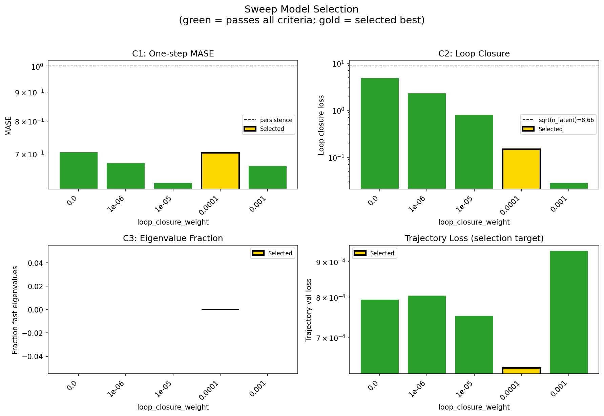
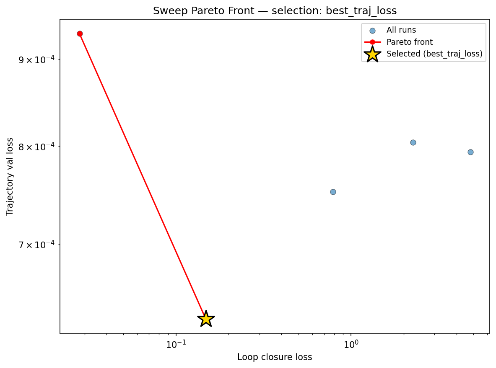
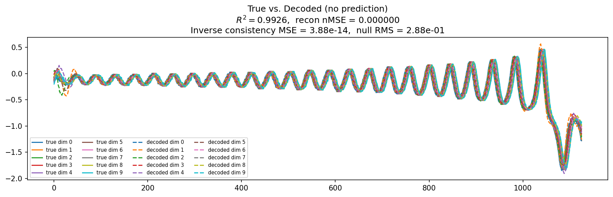
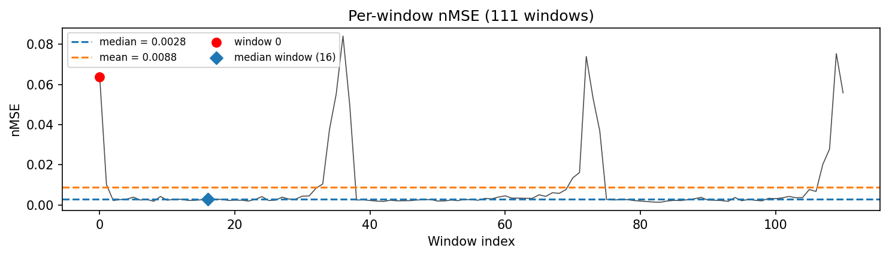
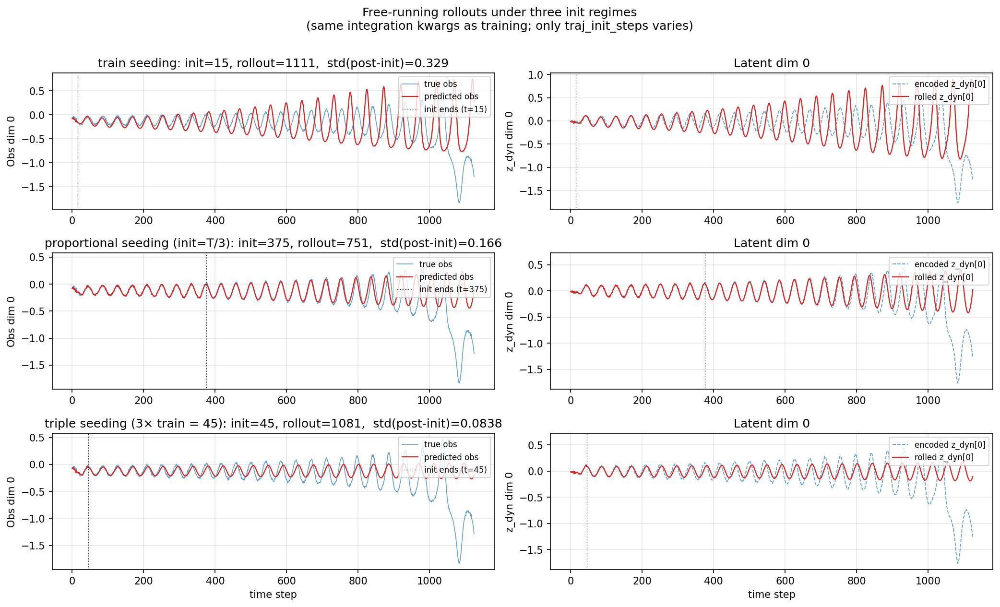
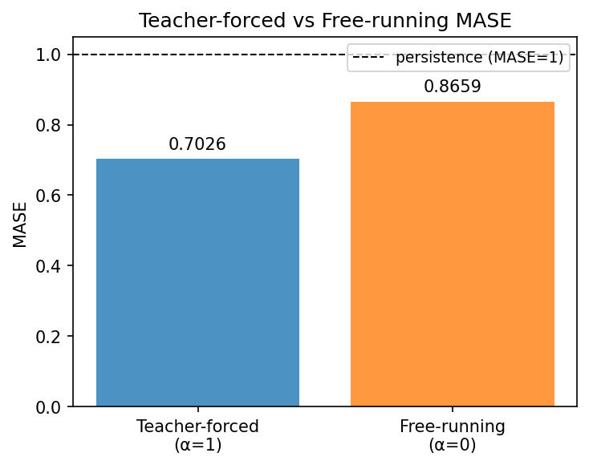
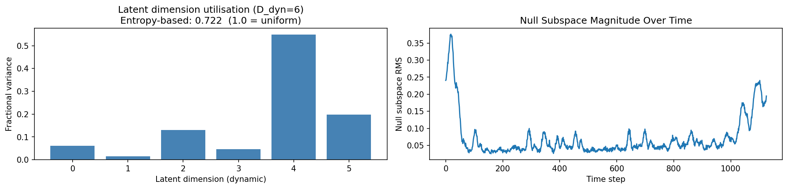
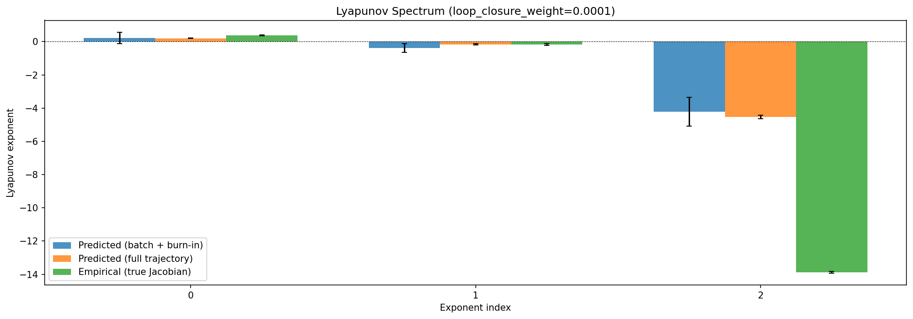
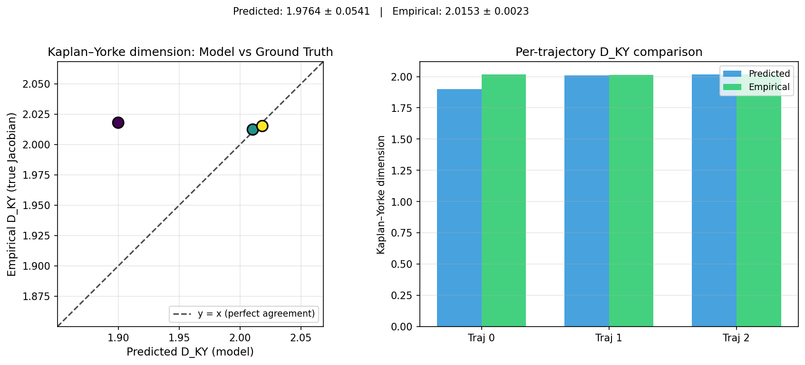
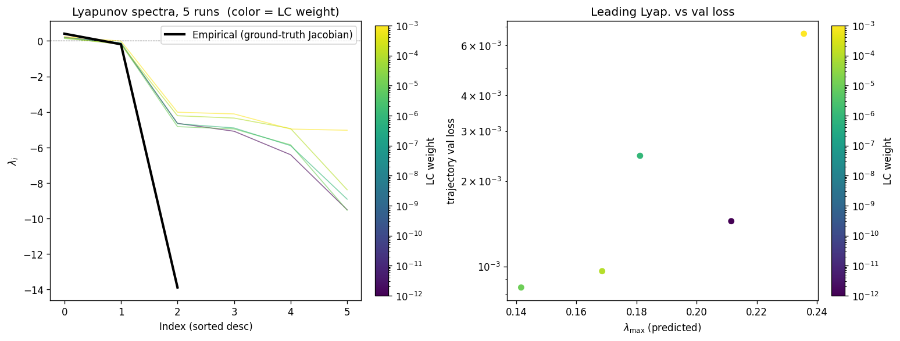
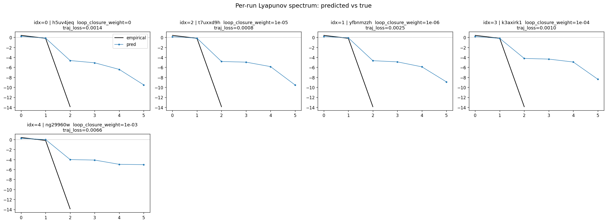
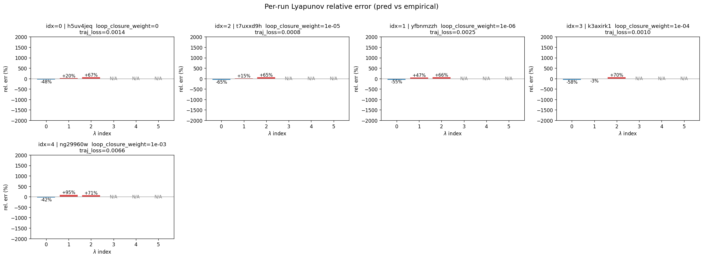
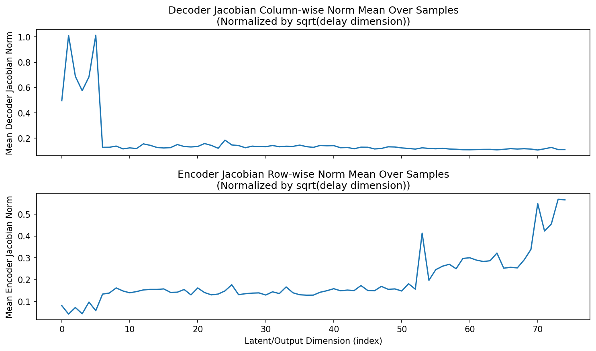
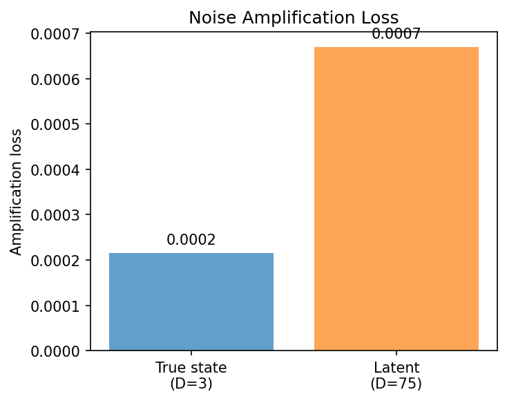
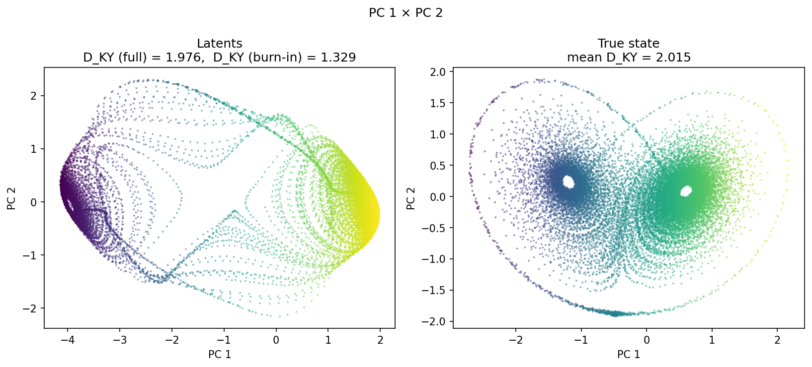
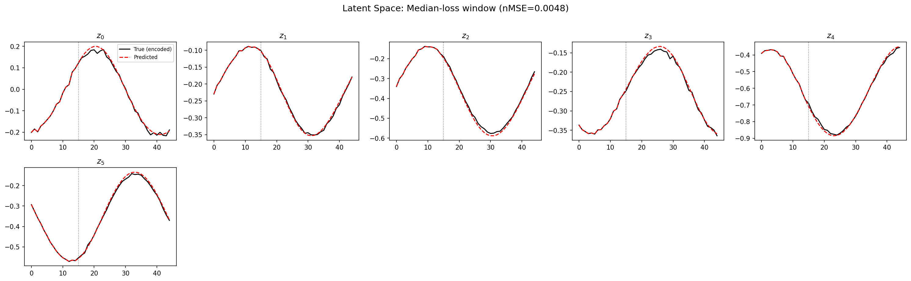
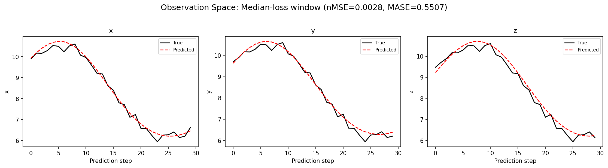
(to be written)
run_analytics stdoutrun_analyticsNo run_id provided — selecting best run from group 'lorenz_partial_additive_splitmode_p30_obsnoise001_nd75_init15_autodim__lc_sweep' ...
Found 5 total runs in JacobianODE/Lorenz_INDpartial_NDInitSweep_autodim_D1_NormTrue__JacobianODE (group=lorenz_partial_additive_splitmode_p30_obsnoise001_nd75_init15_autodim__lc_sweep)
All runs (state, loop_closure_weight, tangent_entropy_weight, kl_dyn_weight):
h5uv4jeq: state=finished, lc=0.0, te=0.0, kl_dyn=0.0
t7uxxd9h: state=finished, lc=1e-05, te=0.0, kl_dyn=0.0
yfbnmzzh: state=finished, lc=1e-06, te=0.0, kl_dyn=0.0
k3axirk1: state=finished, lc=0.0001, te=0.0, kl_dyn=0.0
ng29960w: state=finished, lc=0.001, te=0.0, kl_dyn=0.0
slurm_timeout_min not found in any run config — falling back to 180 min
Including h5uv4jeq (lc=0.0): use_all_runs=True (state=finished)
Including t7uxxd9h (lc=1e-05): use_all_runs=True (state=finished)
Including yfbnmzzh (lc=1e-06): use_all_runs=True (state=finished)
Including k3axirk1 (lc=0.0001): use_all_runs=True (state=finished)
Including ng29960w (lc=0.001): use_all_runs=True (state=finished)
Found 5 effectively-done sweep runs:
loop_closure_weight=0.0, tangent_entropy_weight=0.0, kl_dyn_weight=0.0 -> run_id=h5uv4jeq
loop_closure_weight=1e-06, tangent_entropy_weight=0.0, kl_dyn_weight=0.0 -> run_id=yfbnmzzh
loop_closure_weight=1e-05, tangent_entropy_weight=0.0, kl_dyn_weight=0.0 -> run_id=t7uxxd9h
loop_closure_weight=0.0001, tangent_entropy_weight=0.0, kl_dyn_weight=0.0 -> run_id=k3axirk1
loop_closure_weight=0.001, tangent_entropy_weight=0.0, kl_dyn_weight=0.0 -> run_id=ng29960w
n_dims=75, n_latent=75, n_dyn=6, dt=0.0150
run=h5uv4jeq: DiagnosticMetrics(one_step_mase=0.7051078081130981, loop_closure_loss=4.8020830154418945, fast_eigenvalue_fraction=0.0, trajectory_val_loss=0.0007934003951959312) (from W&B history)
run=yfbnmzzh: DiagnosticMetrics(one_step_mase=0.6745500564575195, loop_closure_loss=2.265191078186035, fast_eigenvalue_fraction=0.0, trajectory_val_loss=0.0008038212545216084) (from W&B history)
run=t7uxxd9h: DiagnosticMetrics(one_step_mase=0.6214777231216431, loop_closure_loss=0.7874701619148254, fast_eigenvalue_fraction=0.0, trajectory_val_loss=0.000751942687202245) (from W&B history)
run=k3axirk1: DiagnosticMetrics(one_step_mase=0.7030951976776123, loop_closure_loss=0.14789293706417084, fast_eigenvalue_fraction=0.0, trajectory_val_loss=0.0006325357244350016) (from W&B history)
run=ng29960w: DiagnosticMetrics(one_step_mase=0.6657422184944153, loop_closure_loss=0.02807716652750969, fast_eigenvalue_fraction=0.0, trajectory_val_loss=0.0009320250246673822) (from W&B history)
Ranking method: best_traj_loss
Best run ID: k3axirk1
Best loop_closure_weight: 0.0001
Best tangent_entropy_weight: 0.0
Best kl_dyn_weight: 0.0
Best traj loss: 0.000633
Criteria applied: ['C1', 'C2', 'C3']
Surviving: 5 / 5
Auto-selected run_id: k3axirk1
======================================================================
PARETO FRONTIER RUNS (2 runs)
======================================================================
Run ID LC Loss Traj Val Loss
------------ -------------- --------------
ng29960w 0.028077 0.000932
k3axirk1 0.147893 0.000633 <-- selected
======================================================================
RANKING METHOD COMPARISON (over 5 survivors)
======================================================================
Method Run ID LC Loss Traj Val Loss
---------------------- ------------ -------------- --------------
best_traj_loss k3axirk1 0.147893 0.000633 <-- active
pareto_knee ng29960w 0.028077 0.000932
geo_rank k3axirk1 0.147893 0.000633
minimax_rank k3axirk1 0.147893 0.000633
geo_log_score k3axirk1 0.147893 0.000633
minimax_log_score k3axirk1 0.147893 0.000633
======================================================================
Loading run k3axirk1 from JacobianODE/Lorenz_INDpartial_NDInitSweep_autodim_D1_NormTrue__JacobianODE ...
Train dataset shape: torch.Size([23782, 45, 75])
Validation dataset shape: torch.Size([7567, 45, 75])
Test dataset shape: torch.Size([3243, 45, 75])
Train trajectories dataset shape: torch.Size([22, 1126, 75])
Validation trajectories dataset shape: torch.Size([7, 1126, 75])
Test trajectories dataset shape: torch.Size([3, 1126, 75])
Loading checkpoint epoch=102-step=20600.ckpt...
Computing reconstruction ...
Computing MASE ...
Teacher-forced MASE: 0.7026
Free-running MASE: 0.8659
Computing latent utilization ...
Entropy-based utilization: 0.722
Null subspace mean RMS: 9.294574e-02
Computing Lyapunov exponents ...
Computing full-trajectory Lyapunov (3 test trajs, T=1126) ...
Predicted Lyapunov exponents (batch+burn-in, 128 windowed trajs):
λ_1 = +0.2199 ± 0.3389
λ_2 = -0.3831 ± 0.2736
λ_3 = -4.2233 ± 0.8614
λ_4 = -4.5872 ± 0.8044
λ_5 = -4.9738 ± 0.6340
λ_6 = -8.9562 ± 3.1557
Predicted Lyapunov exponents (full-length, 3 test trajs):
λ_1 = +0.2045 ± 0.0235
λ_2 = -0.1666 ± 0.0414
λ_3 = -4.5432 ± 0.1078
λ_4 = -4.6188 ± 0.0589
λ_5 = -4.9053 ± 0.0798
λ_6 = -9.4683 ± 0.0128
Empirical Lyapunov exponents (mean ± std):
λ_1 = +0.3846 ± 0.0251
λ_2 = -0.1716 ± 0.0444
λ_3 = -13.8799 ± 0.0398
Mean KY dim (predicted): 1.976 ± 0.054
Mean KY dim (empirical): 2.015 ± 0.002
Mean KY dim (burn-in): 1.329 ± 0.546
Computing prediction windows ...
Windows: 111 — nMSE min=0.0014, median=0.0028, mean=0.0088, max=0.0841
Computing long-trajectory free-running rollouts ...
Computing encoder/decoder Jacobians ...
encoder_jacobian: (128, 75, 75)
decoder_jacobian: (128, 75, 75)
Computing amplification loss ...
Amplification loss — True state: 0.000216
Amplification loss — Latent: 0.000670